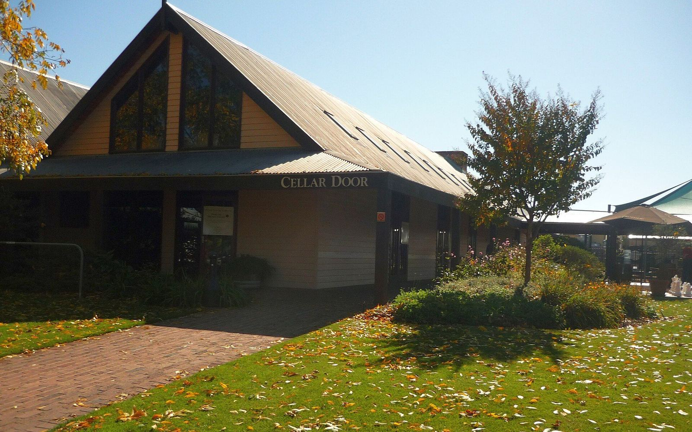
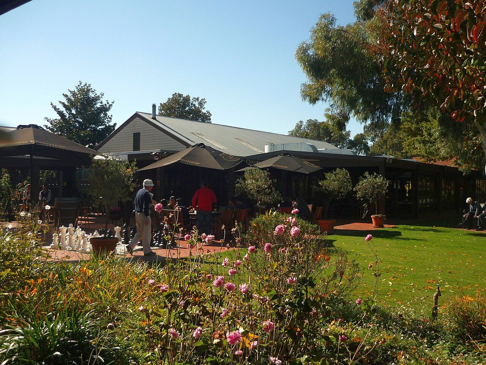
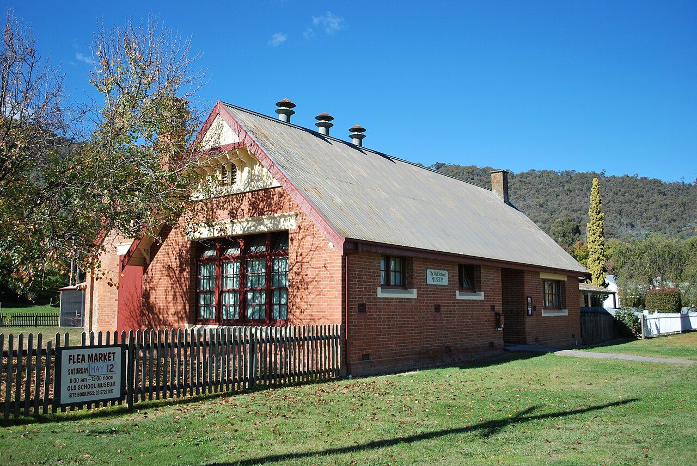

It does rain in the mountains. When it does, the valley goes quiet and green, and there's still plenty to do, starting with the pool table under our covered barbecue area.
Staying in
Every cottage has free Wi-Fi and is heated, with electric blankets on the beds. The covered barbecue area has a pool table, so you can cook and play out of the rain. Then there's watching the river rise from your window with a cup of tea, and a book you've been meaning to finish.

In Bright
- Sun Cinema Bright shows new release films. Check their website for sessions.
- Bright Art Gallery on Mountbatten Avenue is community-run, with changing exhibitions, and entry is by donation.
- Alpine Light Gallery is another gallery to browse, on Gavan Street.
- The Bright Railway museum at the old station opens on weekend afternoons from September to May.
- Bright Brewery on the Great Alpine Road is open seven days, for a long, warm lunch.

Down the valley
Drive the other way, through Myrtleford, and you reach Milawa. Milawa Cheese Company, on Factory Road, is open every day except Christmas Day. Brown Brothers has its cellar door and restaurant nearby. Put the two together for a long lunch, and take some cheese home for the evening.
On the way, Myrtleford has its own museum and art gallery, and on the fourth Saturday of the month a farmers market at the Piazza.




.JPG){kind=link}